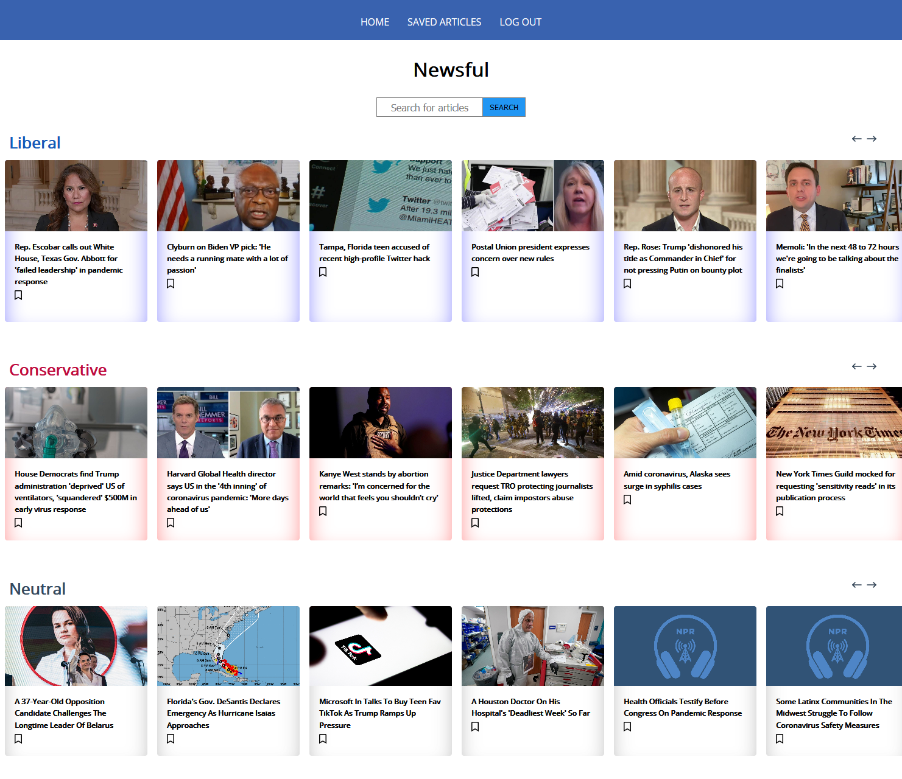
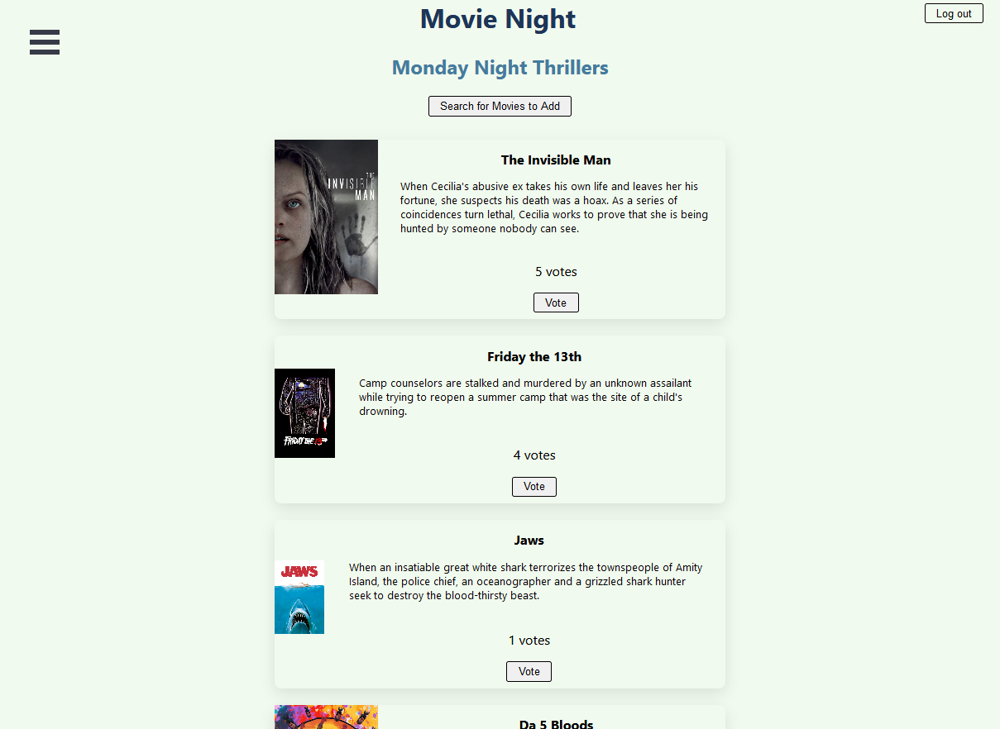
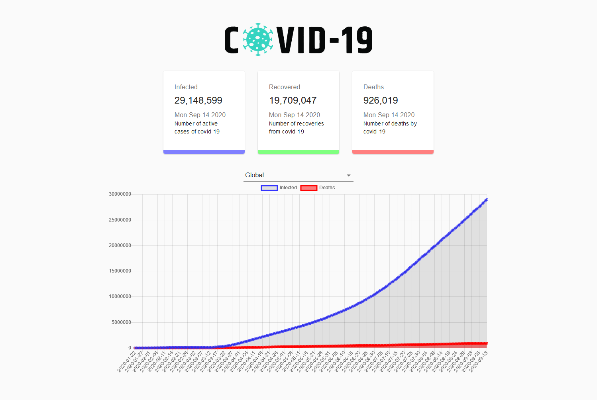
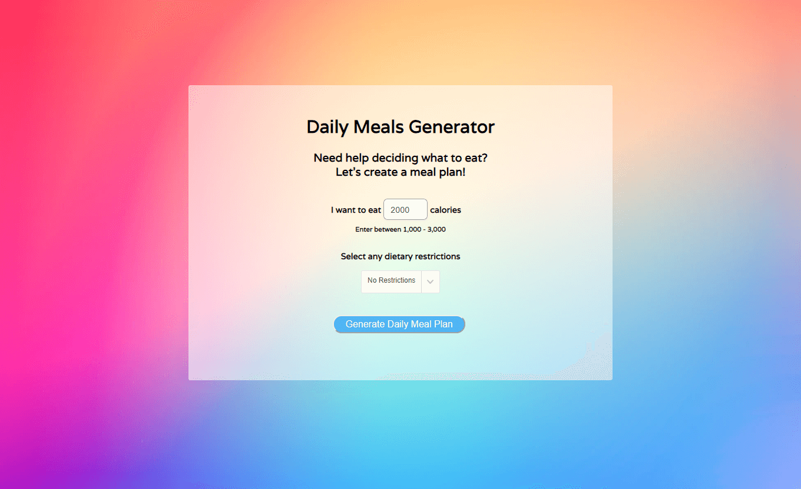

Projects
Newsful
As we increasingly get our news from digital media sources, it is important to be aware of the role that bias plays in what we're reading. I know for myself and many others, we tend to only read news from sources that align with where we are on the political spectrum. I created this app that shows you how stories are reported on across conservative, liberal, and neutral news outlets. This will show how stories are reported on from different viewpoints. This app was built with React, JavaScript, Node.js, Express and uses The Currents API.
Live Front End Github Back End GithubMovie Night
During the Coronavirus pandemic, I was having virtual movie night parties with friends. One problem we kept having was trying to decide what to watch amongst the group. I decided to create this app that will allow everyone in the group to vote for their choice. The app will show you which movie got the most votes. You can also create lists for different nights/groups of friends. This app was built with React, JavaScript, Node.js, Express and uses The Movie Database API.
Live Front End Github Back End GithubCovid Tracker
If you've ever been stuck trying to create a meal plan, let this app do all the work! Just enter your calories and any diet restrictions and we'll generate a daily meal plan for you. This app was built with React, Material UI, Charts.js and uses the COVID-19 API with data from John Hopkins University.
Live GithubDaily Meal Generator
If you've ever been stuck trying to create a meal plan, let this app do all the work! Just enter your calories and any diet restrictions and we'll generate a daily meal plan for you. This app was built with JavaScript, HTML, CSS, jQuery, and uses the Spoonacular API.
Live Github